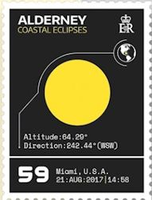

LIST 2017/08
＜略号＞
BK=切手帳、S/S=小型シート、ミニチュアシート、(シ)=セルフ糊式、CEPT=「EUROPA」シリーズ、□=無目打
( )内の数字は、種類の数
全体に取り消し線のあるものは、売り切れです。(2019.06.10)
品番のみに取り消し線があるものは、入荷待ちです。
青文字の品番は、再入荷（在庫僅）です。
最近売り切れの時期が早まっております。
ご注文はおはやめにどうぞ。
★ 恐れ入りますが1000円未満のご注文はお受けできません ★
当店の価格はすべて【税込】です。
発行年が2017年以外のものは、国名のあとに発行年2桁を記載いたします。
| 品番 | 品名 | 価格（税込) |
| YV 1 | 国連 世界遺産 シルクロード (6) | 1780 |
| YV 2 | 国連 世界遺産 シルクロード BK | 8280 |
| YV 3 | イギリス Post＆Go 航空郵便 (シ)(6) | 990 |
| YV 4 | イギリス 昔のおもちゃ 2連×5 | 1690 |
| YV 5 | イギリス 教育絵本レディバードブックス 2連×4 | 2120 |
| YV 6 | イギリス 第一次世界大戦100年大型BK | 4010 |
| YV 7 | オーストリア 昔の郵便馬車 S/S | 540 |
| YV 8 | オーストリア 昔の切手 S/S | 740 |
| YV 9 | オーランド SEPAC手工芸の宝飾品 (1) | 280 |
| YV10 | オルダニー 日食 (6)＋S/S 感熱印刷 | 3410 |
| YV12 | カナダ ヒナギク (シ)(2) | 270 |
| YV13 | 台湾 中国古典文学「紅楼夢」2017 (4) | 420 |
| YV14 | 台湾 普通：果物・スイカ、ブドウ他 (4) | 480 |
| YV15 | マカオ 社会福祉事業 (4)田型＋S/S | 920 |
| YV16 | マカオ 社会福祉事業 (4)横連＋S/S | 920 |
| YV17 | 香港 子供の切手・五感 (5)＋S/S 特殊加工 | 650 |
| YV18 | 香港 希少植物 (4)＋S/S | 670 |
| YV19 | 韓国 独立記念館30年 2連横エンボス | 170 |
| YV20 | 韓国 独立記念館30年 2連縦エンボス・自動外 | 170 |
| YV21 | 韓国 19代大統領 文在寅 (1)＋S/S | 180 |
| YV22 | 韓国 王室の印章 横4連＋S/S | 660 |
| YV23 | シンガポール ウェディングの宝石 (4) | 680 |
| YV24 | シンガポール メルボルン切手コイン展年賀酉年 S/S | 420 |
| YV25 | スイス 手紙とEメール (1)ミラー加工 | 230 |
| YV26 | スイス ポストクロッシング (3) | 1020 |
| YV27 | スイス 駅シリーズ (シ)(4) | 1270 |
| YV28 | スイス テーブリレター150年 S/S | 190 |
| YV29 | スイス 自然保護地区「クリュ・デ・ヴァン」S/S | 230 |
| YV30 | スイス マルメロの実の香り S/S 香付 | 450 |
| YV31 | スイス 「絵文字」(シ)BKの分解 (2) | 420 |
| YV32 | スイス 「絵文字」(シ)BK・2種5組入自動外 | 2100 |
| YV33 | スイス ベルン大聖堂500年 (2) | 450 |
| YV34 | スイス ベルン大聖堂500年 8面シート(2)自動外 | 3550 |
| YV35 | スウェーデン リンゴ祭り (シ)コイル(1)BKと別モチーフ | 130 |
| YV36 | スウェーデン リンゴ祭り (シ)BK | 2810 |
| YV37 | スウェーデン ラーシュ・レリーンの水彩画(シ)BK | 1870 |
| YV38 | スウェーデン ラーシュ・レリーンの水彩画(シ)BK半切 | 940 |
| YV39 | スウェーデン 薬用植物3種ジギタリス他 S/S | 1690 |
| YV41 | ドイツ ミクロの世界・人毛、ビタミンC (2) | 550 |
| YV42 | ドイツ 北ドイツ連邦150年 (1) | 1150 |
| YV43 | スロバキア 司祭ラドリンスキー (1)凹 | 460 |
| YV45 | フィンランド 紋章ライオン (シ)S/S | 2890 |
| YV46 | フィンランド サウナ(シ)BK オーランド共発 | 1900 |
| YV47 | フィンランド ムーミン「タイムトラベル」(シ)BK | 2040 |
| YV48 | フランス シェルブール・アン・コタンティン (1)凹 | 190 |
| YV49 | フランス ロシュフォール・アン・テール村 (1)凹 | 190 |
| YV50 | フランス 地中海の樹オリーヴ他 (1)凹 | 280 |
| YV51 | フランス レスリング世界大会パリ (1) | 330 |
| YV52 | フランス ユネスコ サマルカンド、オランウータン (2) | 620 |
| YV53 | フランス フランスの歴史ピキニー条約 S/S凹 | 750 |
| YV54 | モナコ がん患者支援団体25年 (1) | 220 |
| YV55 | モナコ 視聴覚アーカイブ (1) | 220 |
| YV56 | モナコ モナコ切手展グレースケリー (1) | 270 |
| YV57 | モナコ ヘラクレス国際陸上競技大会 (1) | 270 |
| YV58 | モナコ 旧領地 (1)凹 | 530 |
| YV59 | モナコ 元帥 (1)凹 | 680 |
| YV60 | モナコ 紫禁城展 S/S | 1060 |
| YV61 | リヒテン 居住地エリアの割合 (1) | 350 |
| YV62 | リヒテン H．ディッチ画「ラパシュタイン山」 (1) | 880 |
| YV63 | リヒテン リヒテンの郵便配達200年 S/S凹 | 1470 |
| YV64 | リヒテン 果物シリーズ・8種 シート・六角形 | 1860 |
| YV65 | タイ ロシア修好120年 (1) | 60 |
| YV66 | タイ H.R,H チュラポーン王女還暦 (1) | 95 |
| YV67 | タイ ラマ10世ワチラロンコン国王生誕65年(1) | 155 |
| YV68 | アンドラ CEPT エンクラー城 (1) | 270 |
| YV69 | アンドラ アンドラ郵趣協会40年 (1)タブ付凹 | 210 |
| YV70 | アンドラ 人間の塔カスタリェース (1) | 210 |
| YV71 | アンドラ マリア・アスンプタの肖像 (1)凹 | 270 |
| YV72 | アンドラ カルメン･ティッセン美術館 (1) | 320 |
| YV73 | アンドラ マッサーナのコミック祭20年 (1) | 420 |
| YV74 | アンドラ アランの洞窟の伝説 (1) | 970 |
| YV75 | サンピエール&M 鳥 カオグロアメリカムシクイ (1) | 180 |
| YV76 | サンピエール&M 漁師の仕事タラをさばく (1) | 210 |
| YV77 | サンピエール&M ロープともやい棒 (1) | 210 |
| YV78 | サンピエール&M トロール船 (1)凹 | 300 |
| YV79 | サンピエール&M ミクロン島 (1) | 350 |
| YV80 | サンピエール&M 自然の家 2連 | 650 |
| YV81 | サンピエール&M 電話交換手 S/S | 950 |
| YV82 | Ｎ．カレドニア ライオンズクラブ100年 (1) | 150 |
| YV83 | Ｎ．カレドニア 年賀酉年 (1) | 150 |
| YV84 | Ｎ．カレドニア 仏混合太平洋連隊100年 (1) | 250 |
| YV85 | Ｎ．カレドニア グリーティング誕生男女用 (2) | 450 |
| YV86 | Ｎ．カレドニア 政治家ロジャー・ジェルボリーノ (1)凹 | 2060 |
| YV87 | ポリネシア ポリネシア航空 (1) | 160 |
| YV88 | ポリネシア 海洋学会創立100周年 (1) | 210 |
| YV89 | ポリネシア 年賀酉年 (1) | 210 |
| YV90 | ポリネシア オレンジの香り (1)香付 | 210 |
| YV91 | ポリネシア 豊かさへの道 (1)ピトケアン共発 | 290 |
| YV92 | ポリネシア 女性の日 (2) | 370 |
| YV93 | ポリネシア 鳥シリーズ (2)＋S/S | 740 |
| YV94 | ポリネシア 海底で見られる生物 (4)＋S/S | 860 |
| YV95 | ポリネシア 巻貝 (シ)BK | 1240 |
| YV96 | ワリス・フツナ 16鳥シリーズ S/S | 590 |
| YV97 | ワリス・フツナ 16クリスマス「最高の願い」 (1) | 210 |
| YV98 | ワリス・フツナ 伝統舞踊火舞 (1) | 130 |
| YV99 | ワリス・フツナ ワリスのマリアンヌ (1) | 200 |
| YV100 | ワリス・フツナ オランド大統領任期満了 (1) | 600 |
| YV101 | ワリス・フツナ 国際女性の日 (1) | 600 |
| YV102 | ワリス・フツナ 聖人サンピエール・シャネル没175年 (1) | 620 |
| YV103 | ワリス・フツナ 世界環境デー・クジラの保護 (1) | 820 |
| YV106 | マデイラ CEPT 城 (1)＋S/S | 720 |
| 以下は、切手帳の分解です（自動発送外） | ||
| YV107 | スロバキア XQ28 イースター (シ)BKの分解 (1) | 170 |
| YV108 | スロバキア XV28 CEPT (シ)BKの分解 (1) | 320 |
| YV109 | スロバキア YT39 CEPT 城跡 (シ)BKの分解 (1) | 310 |

YV10 オルダニー「日食」
（画像にポインタを当てると、画像が変わります）